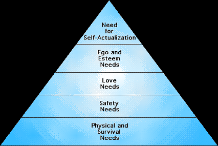

Human Nature
Psychology 101 - Motivation and Emotion
Introduction
What drives you to want to read a particular book? Surf the net? Go to the park? Why did you choose your career? Where you live? Are your drives different from other people or do we all share the same goals in life?
Here will discuss the various theories related to motivation and emotion. We will look at the different views on motivation, from those deemed instinctual, internal, and those viewed as external. We will also look at the theories of emotion, an abstract concept which has yet to have an agreed upon definition.
Motivation - The Five Major Theories
Ever wonder why some people seem to be very successful, highly motivated individuals? Where does the energy, the drive, or the direction come from? Motivation is an area of psychology that has gotten a great deal of attention, especially in the recent years. The reason is because we all want to be successful, we all want direction and drive, and we all want to be seen as motivated.
There are several distinct theories of motivation we will discuss in this section. Some include basic biological forces, while others seem to transcend concrete explanation. Let's talk about the five major theories of motivation.
1. Instinct Theory
Instinct theory is derived from our biological make-up. We've all seen spider's webs and perhaps even witnessed a spider in the tedious job of creating its home and trap. We've all seen birds in their nests, feeding their young or painstakingly placing the twigs in place to form their new home. How do spiders know how to spin webs? How do birds now how to build nests?
The answer is biology. All creatures are born with specific innate knowledge about how to survive. Animals are born with the capacity and often times knowledge of how to survive by spinning webs, building nests, avoiding danger, and reproducing. These innate tendencies are preprogrammed at birth, they are in our genes, and even if the spider never saw a web before, never witnessed its creation, it would still know how to create one.
Humans have the same types of innate tendencies. Babies are born with a unique ability that allows them to survive; they are born with the ability to cry. Without this, how would others know when to feed the baby, know when he needed changing, or when she wanted attention and affection? Crying allows a human infant to survive. We are also born with particular reflexes which promote survival. The most important of these include sucking, swallowing, coughing, blinking. Newborns can perform physical movements to avoid pain; they will turn their head if touched on their cheek and search for a nipple (rooting reflex); and they will grasp an object that touches the palm of their hands.
2. Drive Reduction Theory
According to Clark Hull (1943, 1952), humans have internal internal biological needs which motivate us to perform a certain way. These needs, or drives, are defined by Hull as internal states of arousal or tension which must be reduced. A prime example would be the internal feelings of hunger or thirst, which motivates us to eat. According to this theory, we are driven to reduce these drives so that we may maintain a sense of internal calmness.
3. Arousal Theory
Similar to Hull's Drive Reduction Theory, Arousal theory states that we are driven to maintain a certain level of arousal in order to feel comfortable. Arousal refers to a state of emotional, intellectual, and physical activity. It is different from the above theory, however, because it doesn't rely on only a reduction of tension, but a balanced amount. It also does better to explain why people climb mountains, go to school, or watch sad movies.
4. Psychoanalytic Theory
Remember Sigmund Freud and his five part theory of personality. As part of this theory, he believed that humans have only two basic drives: Eros and Thanatos, or the Life and Death drives. According to Psychoanalytic theory, everything we do, every thought we have, and every emotion we experience has one of two goals: to help us survive or to prevent our destruction. This is similar to instinct theory, however, Freud believed that the vast majority of our knowledge about these drives is buried in the unconscious part of the mind.
Psychoanalytic theory therefore argues that we go to school because it will help assure our survival in terms of improved finances, more money for healthcare, or even an improved ability to find a spouse. We move to better school districts to improve our children's ability to survive and continue our family tree. We demand safety in our cars, toys, and in our homes. We want criminal locked away, and we want to be protected against poisons, terrorists, and any thing else that could lead to our destruction. According to this theory, everything we do, everything we are can be traced back to the two basic drives
5. Humanistic Theory
Although discussed last, humanistic theory is perhaps the most well know theory of motivation. According to this theory, humans are driven to achieve their maximum potential and will always do so unless obstacles are placed in their way. These obstacles include hunger, thirst, financial problems, safety issues, or anything else that takes our focus away from maximum psychological growth.
The best way to describe this theory is to utilize the famous pyramid developed by Abraham Maslow (1970) called the Hierarchy of Needs. Maslow believed that humans have specific needs that must be met and that if lower level needs go unmet, we can not possible strive for higher level needs. The Hierarchy of Needs shows that at the lower level, we must focus on basic issues such as food, sleep, and safety. Without food, without sleep, how could we possible focus on the higher level needs such as respect, education, and recognition?

Throughout our lives, we work toward achieving the top of the pyramid, self actualization, or the realization of all of our potential. As we move up the pyramid, however, things get in the way which slow us down and often knock us backward. Imagine working toward the respect and recognition of your colleagues and suddenly finding yourself out of work and homeless. Suddenly, you are forced backward and can no longer focus your attention on your work due to the need for finding food and shelter for you and your family.
According to Maslow, nobody has ever reached the peak of his pyramid. We all may strive for it and some may even get close, but no one has achieved full self-actualization. Self-actualization means a complete understanding of who you are, a sense of completeness, of being the best person you could possibly be. To have achieved this goal is to stop living, for what is there to strive for if you have learned everything about yourself, if you have experienced all that you can, and if there is no way left for you to grow emotionally, intellectually, or spiritually
Emotion - The Five Major Theories
In the above section we looked at why people (YOU!) may act ot think a certain way. But what about how they feel? What is emotion? A feeling? Then what is a feeling? These terms are difficult to define and even more difficult to understand completely. People have been attempting to understand this phenomenon for thousands of years, and will most likely debate for a thousand more. This section will present the various theories related to the acquisition of emotion. The mainstream definition of emotion refers to a feeling state involving thoughts, physiological changes, and an outward expression or behavior. But what comes first? The thought? The physiological arousal? The behavior? Or does emotion exist in a vacuum, whether or not these other components are present? There are five theories which attempt to understand why we experience emotion.
1. James-Lange Theory
The James-Lange theory of emotion argues that an event causes physiological arousal first and then we interpret this arousal. Only after our interpretation of the arousal can we experience emotion. If the arousal is not noticed or is not given any thought, then we will not experience any emotion based on this event.
EXAMPLE: You are walking down a dark alley late at night. You hear footsteps behind you and you begin to tremble, your heart beats faster, and your breathing deepens. You notice these physiological changes and interpret them as your body's preparation for a fearful situation. You then experience fear.
Event → Arrousal → Interpretation → Emotion
2. Cannon-Bard Theory
The Cannon-Bard theory argues that we experience physiological arousal and emotional at the same time, but gives no attention to the role of thoughts or outward behavior.
EXAMPLE: You are walking down a dark alley late at night. You hear footsteps behind you and you begin to tremble, your heart beats faster, and your breathing deepens. At the same time as these physiological changes occur you also experience the emotion of fear.
Event → Arrousal
→Emotion
3. Schachter-Singer Theory
According to this theory, an event causes physiological arousal first. You must then identify a reason for this arousal and then you are able to experience and label the emotion.
EXAMPLE: You are walking down a dark alley late at night. You hear footsteps behind you and you begin to tremble, your heart beats faster, and your breathing deepens. Upon noticing this arousal you realize that is comes from the fact that you are walking down a dark alley by yourself. This behavior is dangerous and therefore you feel the emotion of fear.
Event → Arrousal → Reasoning → Emotion
4. Lazarus Theory
Lazarus Theory states that a thought must come before any emotion or physiological arousal. In other words, you must first think about your situation before you can experience an emotion.
EXAMPLE: You are walking down a dark alley late at night. You hear footsteps behind you and you think it may be a mugger so you begin to tremble, your heart beats faster, and your breathing deepens and at the same time experience fear.
Event → Thought → Arrousal
→Emotion
5. Facial Feedback Theory
According to the facial feedback theory, emotion is the experience of changes in our facial muscles. In other words, when we smile, we then experience pleasure, or happiness. When we frown, we then experience sadness. it is the changes in our facial muscles that cue our brains and provide the basis of our emotions. Just as there are an unlimited number of muscle configurations in our face, so to are there a seemingly unlimited number of emotions.
EXAMPLE: You are walking down a dark alley late at night. You hear footsteps behind you and your eyes widen, your teeth clench and your brain interprets these facial changes as the expression of fear. Therefore you experience the emotion of fear.
Event → Facial Changes → Emotion
^ Top ^